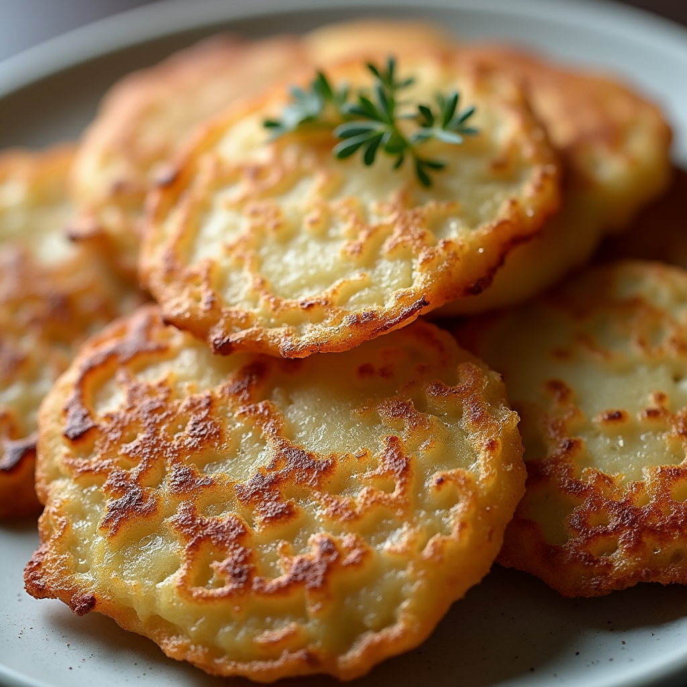
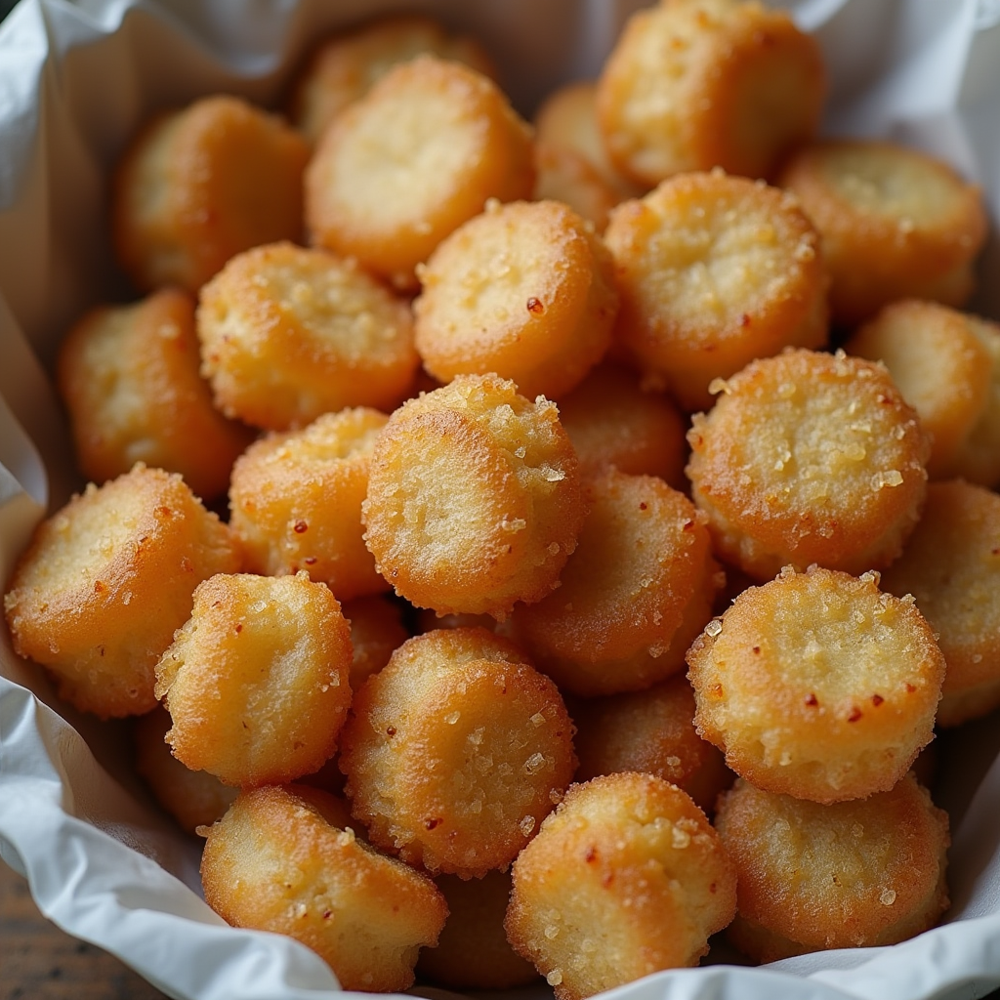
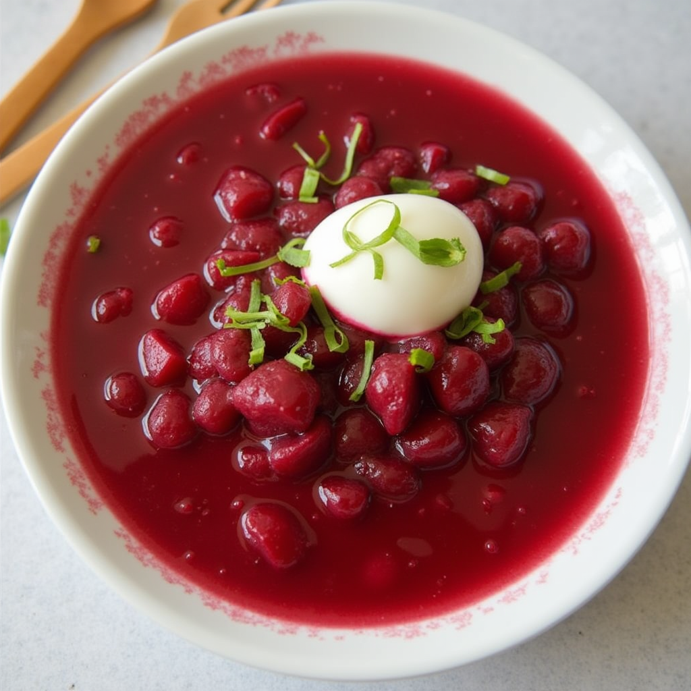
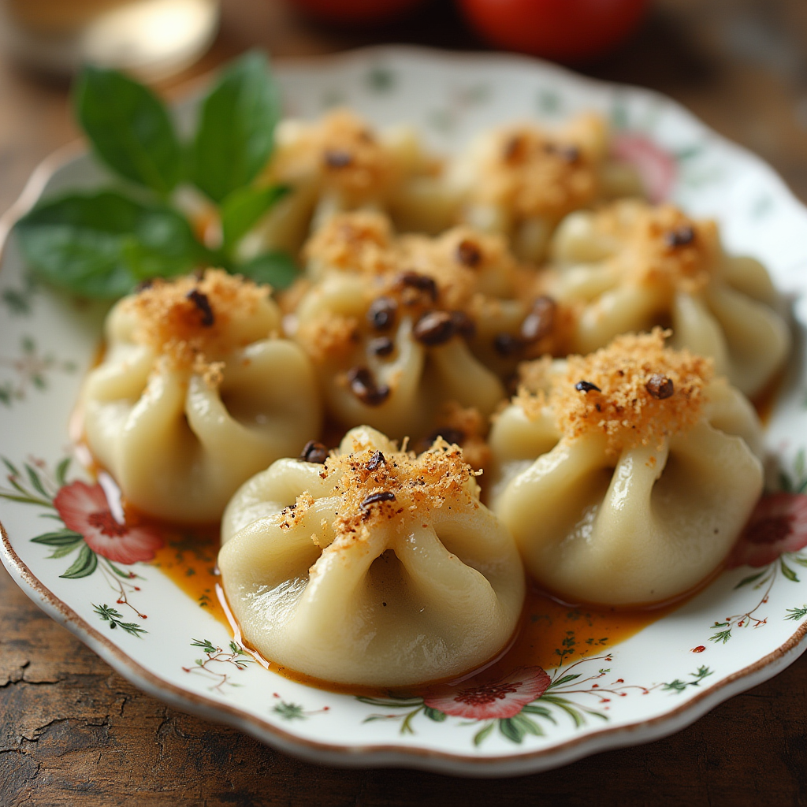
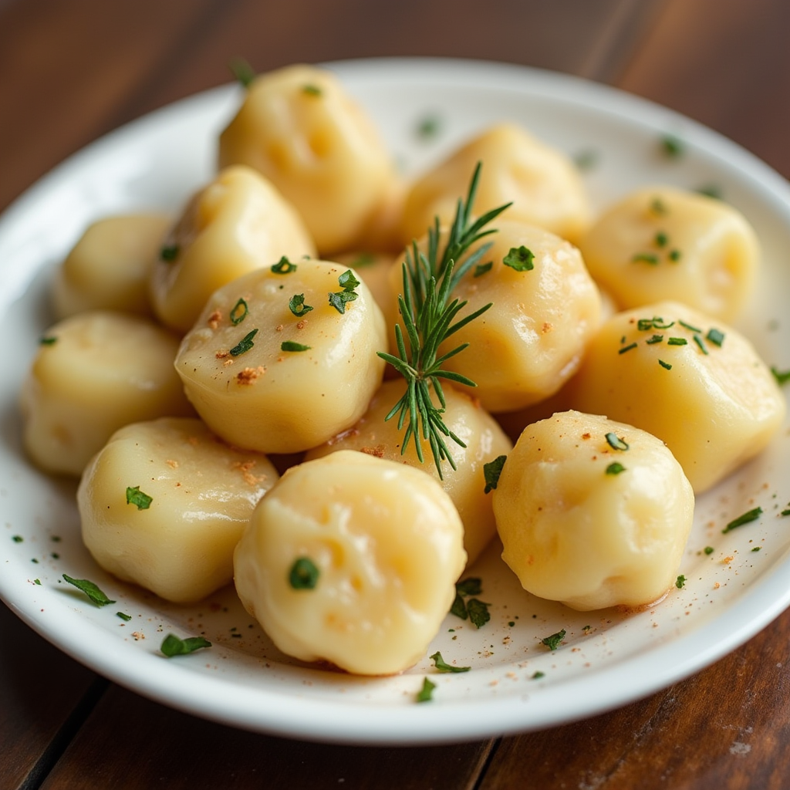

Draniki
Draniki
Description:
Crispy potato pancakes, a very important food in Belarus, are made with grated raw potatoes, onions, eggs, and flour. You can fry them in a pan or bake them.Serving:
They're great on their own with sauces like sour cream, or can be part of bigger dishes like those with mushrooms or meat.


Shkvarki
Shkvarki
Description:
Shkvarki are crispy and salty, a classic Belarusian snack. They are made from fried pork lard sprinkled with salt and pepper. The lard is fried in a pot.Serving:
Shkvarki are great as a standalone snack, and can also be used as a filling for many dishes in Belarus.Svekolnik
Description:
This is a cold borscht, bright red in color, a refreshing summer dish. It is made from beets, cucumbers, potatoes, and eggs.Serving:
It is usually served cold, with sour cream or yogurt on top.

Svekolnik

Kolduny
Kolduny
Description:
These are Belarusian dumplings filled with various ingredients, such as meat, mushrooms, or cheese. They are made from potato and fried in a pan until cooked.Serving:
They are served with sauces, such as butter, sour cream, and mushrooms.Klotzki
Description:
Klotzki is another type of Belarusian dumplings made from potatoes.Serving:
They are often served with butter, sour cream, and fried onions. The potatoes are mashed, mixed with flour, eggs, and spices, then shaped into balls and boiled.

Klotzki